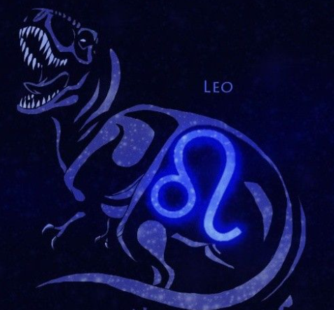

Horasauruscope Dinodiac
Ever wondered what type of Zodiac sign you are? What about the type of Dinosaur? If you answered YES! Then welcome to the Horasauruscope Dinodiac!
Let's get to know you

Cancer
Donec nec dui feugiat, dapibus tellus a, suscipit justo. Vestibulum tempus nisi orci, maximus sodales felis lacinia quis. Donec fermentum lectus nec eros vestibulum blandit. Curabitur pharetra tellus elementum felis malesuada, in vulputate arcu pulvinar. Nam eu dui in velit laoreet dictum et facilisis magna. Class aptent taciti sociosqu ad litora torquent per conubia nostra, per inceptos himenaeos. Nam euismod ac augue id sagittis. Vestibulum commodo facilisis dolor, id pretium arcu vestibulum id.
Release the beast?
Wanna know your Horosauruscope Dinodiac?
What is your blah blah blah?
Aries T-rex
As a Tyrannosaurus Aries you are unafraid of conflict, highly competitive, honest, and direct. You are driven by a desire to prove yourself and your strength. A Tyrannosaurus Aries is not weighed down by the freedom of choice. They throw themselves at the world eagerly and without fear. They are highly self-aware, have strong opinions and are always ready to defend them against a fellow Dinosaur.
Learn more
Take the quiz again?
About
Ever wondered what type of Zodiac sign you are? What about the type of Dinosaur? If you answered YES! Then welcome to the Horasauruscope Dinodiac! On this website you can enter your name and birthdate, take a short quiz, and find out just what type of Dinosaur Zodiac sign you are! Then sit back and watch as the webpage transforms into a unique theme based on the information you provided!
If you have ever asked yourself why you like a certain food so much, why you enjoy long walks on the beach, if you’re a pack leader of a herd of ferocious carnivores, or can’t wait to rip apart a Dinosaur threatening to eat your young. Then this site is for you! We have set out to make a fun interactive website that creates a Dinosaur Zodiac reading based on the information YOU provide. Take the test as many times as you like to see all the unique and interesting results!

Mosasaurus
Mosasaurus ( "lizard of the Meuse River") is the type genus (defining example) of the mosasaurs, an extinct group of aquatic squamate reptiles. The skull of Mosasaurus was equipped with robust jaws capable of swinging back and forth and strong muscles capable of powerful bites using dozens of large teeth designed for cutting prey. Its four limbs were shaped into robust paddles to steer the animal underwater. Its tail was long and ended in a downward bend and a paddle-like fluke. Mosasaurus was a predator possessing excellent vision to compensate for its poor sense of smell. Mosasaurus was a common large predator in these oceans and was positioned at the top of the food chain.
Let's restart
Titanosaurus
Were some of the largest land animals known to have ever existed. The largest ones weighed as much as 76 tons. Many titanosaurs were armored with a small mosaic of small, bead-like scales surrounding larger scales. Their diet consisted of a wide variety of plants and grasses. These terrestrial titans traveled in herds and exhibited a pack behaviour that offered defenses against other predators.
Let's restart
Quetzalcoatlus
Quetzalcoatlus is a pterosaur known from the Late Cretaceous period of North America (Maastrichtian stage); it was one of the largest known flying animals of all time. These exceptional creatures boasted wingspans as large as 55 feet across, lifting the proposed 1,100lb creature into the skies. A terrifying sight to behold. These terrestrial stalkers, similar to modern storks, probably hunted small vertebrates on land or in small streams.
Let's restart
Tyrannosaurus Rex
The species Tyrannosaurus rex (rex meaning "king" in Latin). Tyrannosaurus was a bipedal carnivore with a massive skull balanced by a long, heavy tail. Relative to its large and powerful hind limbs, the forelimbs of Tyrannosaurus were short but unusually powerful for their size, and they had two clawed digits. T-rex is among the largest known land predators and is estimated to have exerted the strongest bite force among all terrestrial animals. By far the largest carnivore in its environment, Tyrannosaurus rex was most likely an apex predator